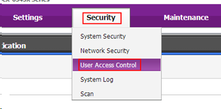
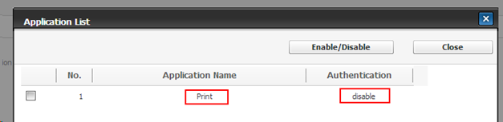

WES Samsung - Dépanner le WES
Règles générales pour le dépannage
Afin de permettre à l'équipe Support Doxense® d'établir un diagnostic de panne rapide et fiable, merci de communiquer le maximum d'informations possible lors de la déclaration de l'incident :
-
Quoi ? Quelle est la procédure à suivre pour reproduire l'incident ?
-
Quand ? A quelle date et à quelle heure a eu lieu l'incident ?
-
Où ? Sur quel périphérique et depuis quel poste de travail a eu lieu l'incident ?
-
Qui ? Avec quel compte utilisateur s'est produit l'incident ?
-
Fichier trace Watchdoc.log : merci de joindre le fichier de trace Watchdoc.
-
Fichier de traces WES : merci d'activer les fichiers de trace sur chaque file pour laquelle vous avez constaté un incident.
Une fois ces informations rassemblées, vous pouvez envoyer une demande de résolution depuis le portail Connect, outil de gestion des incidents dédié aux partenaires.
Pour obtenir un relevé optimal des données nécessaires au diagnostic, utilisez l'outil Watchdoc DiagTool fourni avec le programme d'installation de Watchdoc (cf. Créer un rapport de logs avec DiagTool).
Activer les traces du WES (WEStraces)
Pour effectuer un diagnostic du problème rencontré sur les applications embarquées, il convient d'activer les fichiers traces (logs) spécifiques aux communications du WES.
Pour activer les traces :
-
dans l'interface d'administration web de Watchdoc, depuis le Menu Principal, cliquez sur Files d'impression ;
-
dans la liste des files, cliquez sur la file dotée du WES pour lequel vous souhaitez activer les fichiers traces ;
-
dans l'interface de gestion de la file, cliquez sur le bouton Propriétés ;
-
dans la rubrique [Nom_du_WES], cliquez sur le bouton Editer la configuration:

-
dans la section WES > Diagnostic, cochez la case Activer les traces ;
-
dans la liste Niveau de traces, sélectionnez :
-
Auto : conserve les traces standard ;
- Inclure les contenus binaires : conserve les traces détaillées.
-
- dans le champ Chemin, indiquez le chemin du dossier dans lequel doivent être enregistrés les fichiers de trace. Si vous laissez le champ vide, les fichiers trace seront enregistrés par défaut dans le dossier d'installation Watchdoc_install_dir/Logs/Wes_Traces/QueueId :


Travaux de numérisation, fax et photocopie non comptabilisés
Si les travaux de numérisation, fax et photocopie ne sont pas comptabilisés par Watchdoc, vérifiez que l'adresse (nom d'hôte ou IP) du serveur Watchdoc configurée dans le périphérique est correcte :
-
dans l'interface de configuration de la file, dans la section WES, cliquez sur le bouton Etat de l'application (affiché lorsque le WES est correctement installé) ;
-
cliquez sur le bouton Télécharger afin de télécharger les fichiers de logs et de configuration du WES ;
-
si la configuration de l'adresse et/ou des ports n'est pas correcte, cliquez sur le bouton Configurer de l'interface de configuration de la file ;
-
vérifiez que la procédure a réglé le problème.
Problème d'impression lors du déblocage des travaux
Contexte
Après déblocage des demandes d'impression, vous constatez que les travaux ne sont pas imprimés.
Hypothèse
Il s'agit probablement d' un problème de droits au niveau du périphérique :
Résolution
Il convient de vérifier les paramètres de sécurité définis dans le périphérique :
-
dans l'interface d'administration du périphérique, rendez-vous dans la section Security>User Access Control.

-
Cliquez sur le bouton Edit Application ;
-
Dans la liste Applications, vérifiez que le statut de l'authentifcation de l'application Print est défini comme disable:
